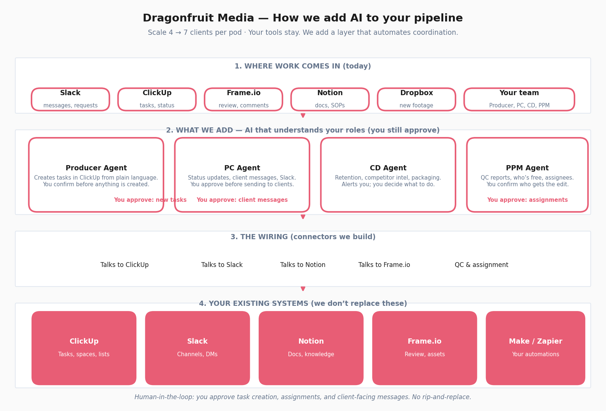

Scale pod capacity from 4 → 7 clients by EOY 2026
Through agentic infrastructure and workflow automation
March 2026 · DRAGONFRUIT MEDIA CONFIDENTIAL
This section explains what you have today, what we add, and how the layers work — so the diagram and the rest of the proposal make sense to everyone.
Dragonfruit operates at scale: 90+ team members and 60+ videos per month across clients. Your pipeline runs from client onboarding through pre-production, production, post-production, publishing, and monthly reporting. Each pod has a Producer, Creative Director, Production Coordinator, and Post Production Manager (who manages 10–12 Editors); you also have shared Scriptwriters, Thumbnail Designers, and Data Analysts. You use ClickUp for tasks and batches, Slack for internal and client communication, Notion for docs and SOPs, Frame.io for review, and Dropbox for footage — plus Make, Zapier, and the rest of your tool stack (~$12.8K/month, 40+ subscriptions). Your time audit and dream allocations show where time goes today and where you want it to go; your AI survey (73 people across 5 roles) and wish list spell out the tools and workflows you want. Nothing in this proposal invents data: we use only what’s in your materials.
We are not replacing ClickUp, Slack, Notion, Frame.io, or Dropbox. We are adding a layer in between your team and those tools. That layer does three things, in line with your brief:
Human-in-the-loop: Task creation, assignment, and client-facing messages never go out without a human approval step. You stay in control; the system suggests and you confirm.
The diagram below has four layers, top to bottom:
Together, these layers support your objective: scale from 4 to 7 clients per pod by EOY 2026 without a proportional headcount increase, by reducing coordination overhead and giving each role the right AI support.
This section maps your current pipeline (Onboarding → Pre-Production → Production → Post-Production → Publishing & monthly reporting), your pod structure (Producer, Creative Director, Production Coordinator, Post Production Manager, 10–12 Editors; shared Scriptwriter, Thumbnail Designer, Data Analyst), and your tool stack (~$12.8K/month, 40+ subscriptions) to the same design in more detail.
Figure 1 (below) shows the four layers described above: where work comes in → the AI layer (with your approval at critical steps) → the connectors → your existing systems.

| Role | Current bottleneck (from your audit) | Automation / AI | Target time shift |
|---|---|---|---|
| Producer | ClickUp admin (38%), Slack (17%), meetings (20%) | Claude-to-ClickUp MCP, Slack templates, async standups | Coordination 74.5% → 41%; freed time → Client Strategy, Creative QC |
| Production Coordinator | ClickUp (40%), Slack (11%), meetings (19%) | Same MCP, templated client comms, automated statuses | Coordination 70% → 40% |
| Creative Director | Preproduction <30%, V1 review, ClickUp admin | Predictive retention, outlier ideation, packaging intel, Claude Projects | Preproduction → 50%; V1/admin → 0% |
| Post Production Manager | Reactive 1:1s, manual QC, admin | Automated QC, editor capacity DB, sentiment alerts | Intentional 1:1s, hiring, onboarding |
| Editor | Idle (6.5%), revisions (13%), ClickUp admin | Capacity assignment, clearer briefs → fewer revisions | Core editing 66% → 80%; idle → 2% |
Build: Claude-to-ClickUp agent, Frame.io sentiment aggregator, automated QC checker (client checklist), capacity-based assignment, predictive retention & outlier ideation (custom or fine-tuned + your data).
Buy/configure: Claude/ChatGPT/Gemini for script/ideation; ElevenLabs, Runway per wish list; Notion/ClickUp native automation where sufficient.
Glue: Expand Make/Zapier; small custom services for events no off-the-shelf tool covers.
Recommendations align with your AI Tool Survey (73 respondents, 5 roles) and your Wish List (16 tools). We justify each by cost, capability, learning curve, and current adoption (e.g. editors = power users; CDs = knowledge gap; PCs want “anything that cuts task time”).
Several players offer parts of what you need, but none deliver the full pipeline + role-based wish list you described:
Our position: We scope to your full pipeline and all 16 tools; we integrate ClickUp, Slack, Frame.io, and Notion in one agentic layer with explicit HITL gates. Implementation and ongoing cost are framed below and in Appendix 1 (per-tool approach, timeline, maintenance, and approximate cost range), as requested in your brief.
CD-1 Predictive Retention (HIGH) — Build: script + channel context → predicted retention curve + drop-off flags. No off-the-shelf equivalent. CD-2 Outlier Ideation (HIGH) — Build: ~20 competitor channels per client; surface outlier videos. CD-3 Visual Packaging & Thumbnail (HIGH) — Thumbnail analysis + script→thumbnail text. CD-4 A/B Test Monitor (HIGH) — Competitor title/thumbnail/description changes + performance delta; Slack alerts. CD-5 Packaging Scorer, CD-6 Client Knowledge Bases (Claude Projects), CD-7 Script Voice Matching, CD-8 Slack Scoring Bot, CD-9 Outlier Aggregator (MEDIUM) — Per role playbooks; CD-6 and CD-5/CD-8 as quick wins for adoption.
Licensing (with buffer): Claude team + API; custom build for CD-1–4, CD-8–9. Estimate: $3.5–6K/month (licenses + API + hosting). Maintenance: Covered in retainer (2–3 days/month); model prompts and thresholds reviewed quarterly; CD-2/CD-4 competitor lists updated per client.
ED-1 Frame.io Sentiment (HIGH) — Video-level + client-level sentiment; Slack alert if below threshold. ED-2 Automated QC (HIGH) — Video + client checklist → timestamped report. ED-3 Capacity-Based Task Assignment (HIGH) — ClickUp + workload + skill/pod → suggested assignees; human confirms. Adoption: short demos + clear SOPs; PPMs positioned as “less manual QC, more coaching.”
Licensing (with buffer): Primarily build; Frame.io/APIs. Estimate: $1.2–2.5K/month. Maintenance: Retainer includes monitoring, checklist updates per client, and Frame.io API/version changes.
PR-4 Claude-to-ClickUp Agent (HIGH) — Natural language → task create/update with correct fields and routing. PR-1 Timeline Calculator, PR-2 Client Sentiment Tracker, PR-3 Slack Templates (MEDIUM) — Templates + auto-fill client/project. PR-4 and PR-3 with one-click flows to minimize learning curve.
Licensing (with buffer): Claude API + Slack. Estimate: $1.2–2.5K/month. Maintenance: Retainer covers PR-4 agent tuning, Slack template updates, and ClickUp/Slack API changes.
Phased rollout with clear milestones, quick wins in the first 30 days, and measurable KPIs at each phase. Timelines include buffer for training, adoption, and iteration.
| Phase | Timeline (with buffer) | Scope | Success / KPIs |
|---|---|---|---|
| Phase 1 Quick wins | Days 1–35 | PR-3 (Slack templates), expand Make/Zapier ClickUp↔Slack, basic PR-1 (timeline calculator) | Fewer ad-hoc Slacks; one source of truth for task created/updated |
| Phase 2 Foundation | Months 1–2.5 | PR-4 (Claude-to-ClickUp) pilot in one pod; ED-3 (capacity assignment) v1; ED-1 (Frame.io sentiment) beta on one client | Producer/PC ClickUp time down in pilot; assignee suggestions live; % tasks via agent (e.g. 30% target) |
| Phase 3 Quality & intelligence | Months 2.5–4.5 | ED-2 (automated QC) for 1–2 clients; CD-6 (Claude Projects) for 2–3 clients; CD-1 or CD-5 as first CD tool | QC report in use; CDs use Claude Projects; reduction in “missed checklist” revisions |
| Phase 4 Scale & full wish list | Months 4.5–7 | Roll PR-4 and ED-3 to all pods; CD-2/CD-3/CD-4; PR-2; CD-8/CD-9 | 7 clients per pod in ≥1 pod; time allocation within 10% of dream targets |
Human-in-the-loop: Task creation (PR-4), assignment (ED-3), client-facing Slack (PR-3), QC escalation (ED-2), sentiment response (ED-1), publish/final handoff — all require review or one-click confirm. Rollback: Feature flags and toggles per agent; revert to manual per pod or client. Training: Per-role playbooks and async Loom/Notion; 2 live sessions per role in Phase 2 and 3; “Innovation Lab” time for Producers/PCs.
Ranges below include realistic buffers for discovery, training, and iteration so we deliver best-in-class outcomes without scope creep.
Model: Hybrid — fixed-price phases for defined deliverables plus retainer for integration, support, and iteration (2–3 days/month). Rates: Based on current market rates for boutique AI and integration consulting (2025–2026): blended day rates $1,150–$1,450 depending on phase and role mix (technical lead, developer, project/ops).
| Phase | Days (with buffer) | Labour estimate |
|---|---|---|
| Phase 1 | 8–14 days | $9,200–$20,300 |
| Phase 2 | 18–30 days | $20,700–$43,500 |
| Phase 3 | 18–26 days | $20,700–$37,700 |
| Phase 4 | 24–36 days | $27,600–$52,200 |
| Retainer (6 months) | 12–18 days | $13,800–$26,100 |
| Total labour | 95–145 days | $109,000–$211,000 |
Current stack (unchanged): Your existing spend (~$12.8K/month on ClickUp, Notion, Frame.io, Slack, Make, Dropbox, etc.) stays as is unless you add seats. We do not replace these; we add a layer on top.
New AI/tooling layer — two parts:
Per-tool approach, timeline, maintenance, and approximate cost range are in Appendix 1, as requested in your wish list brief. Summary:
Estimated new system cost (monthly, with buffer): $3.5–8K depending on scope and usage. Through Phase 4 (first 7 months): ~$25,000–$56,000. This is the only additional tooling spend; your current $12.8K is unchanged.
Total estimated engagement (labour + new system costs through Phase 4): $135,000–$267,000. Timeline: Phase 1 start to Phase 4 complete in 6–7 months; retainer runs in parallel from Month 1.
Cadence: Biweekly steering (30 min); async Slack channel for blockers; weekly written status (Notion or email). Decision-making: Single DFM stakeholder for scope and priorities; technical decisions documented. Team (vendor side): 1 technical lead (architecture + integration), 1 developer (agents + APIs), 0.5 project/ops (timeline, UAT, training). Optional: 0.5 data/ML for CD-1 and outlier models.
We have structured this proposal to score maximally against each of your stated criteria. Below is an explicit mapping.
| Criterion | Weight | How this proposal addresses it (best-in-class) |
|---|---|---|
| Specificity to your workflow | 30% | References your pipeline phases by name (Onboarding → Pre-Pro → Production → Post-Pro → Publish); your time audit and dream allocations with role-level percentages; your tool stack ($12.8K/month, 40+ tools); all 16 wish-list tools (CD-1–CD-9, ED-1–ED-3, PR-1–PR-4); pod structure (Producer, CD, PC, PPM, 10–12 Editors). No generic advice. |
| Clarity of architecture | 25% | Figure 1 (system diagram) with triggers, agents, connectors, external systems and HITL callouts. Build vs buy vs configure for every tool. Integration points (ClickUp, Slack, Frame.io, Notion) and agent examples (Producer, PC, CD, PPM) that an engineer can implement tomorrow. Technical MVP plan (OpenAI Agents SDK, connectors, function tools) documented. |
| Realistic roadmap | 20% | 4 phases over 6–7 months with buffers; quick wins in first 30–35 days; KPIs and success criteria per phase; training and Innovation Lab time; risk mitigation (7 HITL gates, feature flags, rollback). No big-bang; pilot before rollout. |
| Cost transparency | 15% | AI tools cost properly framed: (1) current stack $12.8K unchanged; (2) new layer = implementation in labour + ongoing licenses/API only; (3) per-tool approach, timeline, maintenance, and approximate cost range in Appendix 1 for all 16 tools. Labour by phase with $ totals; overall engagement $135K–$267K. ROI: 29–55% incremental tooling to enable 75% more client capacity (4→7 per pod). |
| Engagement fit | 10% | Async-first (dedicated Slack channel, written updates); biweekly steering only; no unnecessary meetings. Single DFM stakeholder for decisions. All code in shared repo; agent traces viewable. Matches how you operate. |
For each tool: approach (build vs. buy vs. configure), indicative implementation (phase / days in D.1), ongoing cost range ($/month), and maintenance. Existing stack ($12.8K/month) unchanged; below is the incremental AI/tooling layer only.
| Tool | Approach | Implementation | Ongoing ($/mo) | Maintenance |
|---|---|---|---|---|
| CD-1 Predictive Retention | Build | Phase 3–4 | ~$800–1,500 | Retainer; prompt/model review quarterly |
| CD-2 Outlier Ideation | Build | Phase 4 | ~$600–1,200 | Competitor list updates per client |
| CD-3 Packaging & Thumbnail | Build + configure | Phase 4 | ~$400–800 | Included in retainer |
| CD-4 A/B Test Monitor | Build | Phase 4 | ~$300–600 | Competitor list + alert thresholds |
| CD-5 Packaging Scorer | Configure + build | Phase 3 | ~$200–400 | Included in retainer |
| CD-6 Client Knowledge Bases | Configure (Claude Projects) | Phase 3 | ~$500–1,000 | Per-client content updates |
| CD-7 Script Voice Matching | Configure + build | Phase 4 | ~$200–500 | Included in retainer |
| CD-8 Slack Scoring Bot | Build | Phase 3–4 | ~$150–350 | Included in retainer |
| CD-9 Outlier Aggregator | Build (extends CD-2) | Phase 4 | ~$200–400 | Shared with CD-2 |
| ED-1 Frame.io Sentiment | Build | Phase 2–3 | ~$400–800 | Frame.io API + threshold tuning |
| ED-2 Automated QC | Build | Phase 3 | ~$300–600 | Checklist updates per client |
| ED-3 Capacity Assignment | Build | Phase 2, roll Phase 4 | ~$200–400 | ClickUp/availability logic |
| PR-1 Timeline Calculator | Build + configure | Phase 1 | ~$100–250 | Included in retainer |
| PR-2 Client Sentiment Tracker | Build | Phase 4 | ~$250–500 | Included in retainer |
| PR-3 Slack Templates | Configure + build | Phase 1 | ~$50–150 | Template updates as needed |
| PR-4 Claude-to-ClickUp Agent | Build | Phase 2, roll Phase 4 | ~$400–800 | Retainer; ClickUp/Slack API changes |
| Total new system (monthly, indicative) | $3,500–$8,000 | Retainer 2–3 days/mo covers most | ||
Ongoing totals are shared (e.g. one Claude/API bill; hosting). Implementation is part of D.1 labour by phase.
Where in your pipeline each automation or AI capability applies. Aligned to your current pipeline phases.
| Pipeline stage | Automation / AI |
|---|---|
| Onboarding | Template client space (ClickUp); PR-4 for initial task setup; PR-3 templates for kickoff/comms |
| Pre-Production | PR-4 (task create/update); CD-1 (retention), CD-2 (outlier), CD-6 (knowledge bases); PR-1 (timeline); script/ideation (Claude) |
| Production | PR-4 status updates; PR-2 (client sentiment); handoff to post-prod via ClickUp/Slack |
| Post-Production | ED-3 (capacity-based assignment); ED-1 (Frame.io sentiment); ED-2 (automated QC); PR-3 (revision/reminder templates) |
| Publishing & reporting | CD-4 (A/B monitor); CD-3 (packaging); monthly report prep (data/Notion); PR-2 (sentiment) |
Why us: We have a working MVP (all 8 high-priority tools, human-in-the-loop flows, ClickUp/Slack/Frame.io/Notion connectors) ready to show on a call — so you can see exactly how the agentic layer and automation behave before you commit.
Dragonfruit Media confidential · March 2026 · Prepared to win.